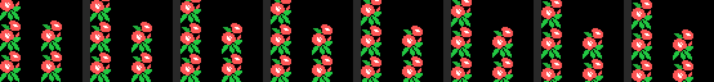
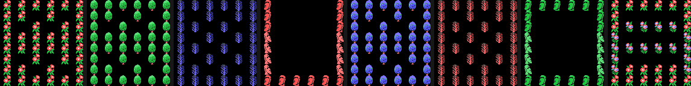

Findings
What turns up on taking it apart and cannot be seen by playing. Each item with its address; whatever was measured, with the measurement.
The background is in video memory eight times over
SCREEN 2 has no scroll register, so Pippols builds one: VRAM holds 192 characters (0x40 to 0xFF) that are eight copies of the same set of 24, each one a pixel lower. Scrolling the screen by a pixel means adding 24 to the character number and writing the name table again; not one pattern is touched.

Those 192 are generated in RAM at the start of each screen (0x566D) out of four 24-byte strips, and of the twelve characters in each half four are seams: the end of one strip on top and the beginning of another underneath. Without them the drawing would split halfway down as soon as the offset was not zero. The whole thing is in The pixel scroll.
The game's entire map fits in 328 bytes
A stage is thirteen stretches of 24 rows; a stretch, six pieces of four columns; and the 44 pieces are built in RAM by gluing groups of three rows from a dictionary of 25. The index list —eight per piece— is 328 bytes, and that describes the whole road of all ten plans.
The map decompressor runs into the code, and pieces are left over
The loop at 0x5496 builds 44 pieces, that is 352 reads, but the index list is only 328 bytes long. The last 24 reads land inside the code at 0x5653, which is the division routine, and out of that come three junk pieces: 41, 42 and 43. It does not matter, because no stretch points at them.
The odd part is that nobody points at pieces 0 and 1 either, and those are properly built. Of the 44 that get constructed, the game uses 39.
The score lies by a factor of ten
The score is three BCD bytes, but the panel paints the six digits and then a fixed zero behind them. What you see is ten times the counter, which is why every score ends in zero. Picking something up is worth 100, 500, 1000 or 2000 of the points you see; the boot and the shield, 5000; the goal and the throne, 3000. The first extra life comes at 20,000 and then every 60,000.
The boot and the shield are the same drawing
In the table at 0x785A each object carries its (pattern, colour) pair. Object 8 —the boot, which makes you walk one and a half times faster— and object 9 —the shield— carry the same pattern, 0xC0, and differ only in colour: 9 for one, 5 for the other. Objects 1 and 4 do the same with pattern 0xA4.

A jump that lands inside another instruction
At 0x717D there is a jr nz,$+4 that ends up at 0x7181, and 0x7181 is not the start of anything: it is the displacement byte of the jr z on the line above. It executes as dec b, which does not matter there because the creature loop keeps BC on the stack (push bc at 0x6B2C, pop bc at 0x6B41), and carries on into the ld c,002h at 0x7182. It is the only place in the cartridge where an instruction is entered halfway through.
The sprites take turns in the order
The MSX can only show four sprites on a line; the fifth disappears. Pippols spreads the loss around: the routine that builds the table (0x7F83) writes the creatures first and the objects second on one frame, and the other way round on the next. So what gets dropped keeps changing instead of always being the same thing.
Eighteen screens and five drawings
The 18 world screens share the background drawings: there are eight stages but only five sets of strips, and what changes from one screen to another is a swap of three pairs of inks (0x577D) over the 96 colour bytes. The same flower comes out red or pink, the same tree green or blue.

Nor is the route a row of screens: the table at 0x7B62 gives two destinations for each and one or the other is taken depending on whether you are going up or down, so two different games do not see the same screens.
The three thirds of the screen, loaded the same
In SCREEN 2 each third of the screen has its own 256 patterns. Pippols loads all three with the same thing, byte for byte, and only because of that can it run the background rows from top to bottom without a character changing its drawing as it crosses row 8 or row 16. It is three times the memory in exchange for a character number always meaning the same thing.
What the scroll costs, measured
In openMSX, on a Philips VG-8020 (PAL, 71,591 cycles per frame) and over 1112 frames of the demo:
| cycles | % of the frame | |
|---|---|---|
| dumping the name table, average | 32,557 | 45.5 % |
| dumping the name table, peak | 33,969 | 47.4 % |
| the whole interrupt, average | 52,533 | 73.4 % |
| the whole interrupt, peak | 70,080 | 97.9 % |
And 732.7 writes to the VDP data port per frame. Repainting the name table takes 62 % of the interrupt's time, and the interrupt eats three quarters of the frame: that is why the main program is a jr $.
An address that gets written and nobody reads
0xE126 is written at 0x59EF on every step of the player, and in the cartridge's 16,384 bytes there is not one instruction that reads it.
THE HOLLY GEM
The text that comes up on reaching the throne is at 0x7C5C, in characters from the cartridge's own font: BRING BACK / THE HOLLY GEM / THE WORLD IS / WAITING FOR YOU. With two Ls, just like that.